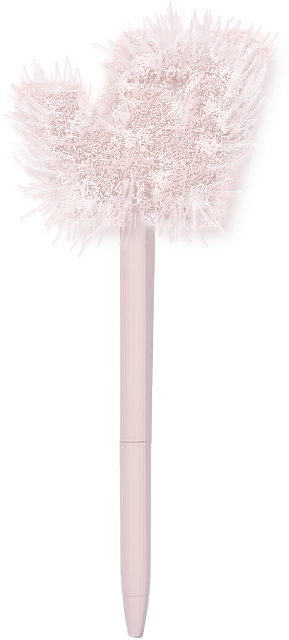
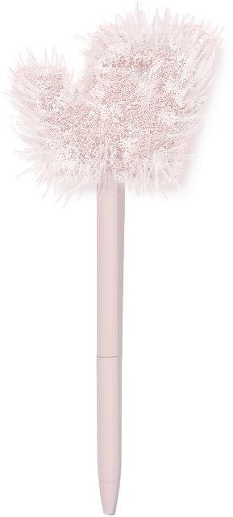

Avant Garden: Poetry through the Lens of the Arts
A poetry festival geared toward sapphics, Avant Garden takes inspiration from beauty, raw emotions and the culmination of the two in Sappho's poetry. The logo is a combination of the letters 'A' and 'G,' accompanied by the influence of Sappho's lyre and an oval around it to represent the emotional mirroring of poetry.